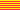
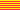

Cataluña
Catalonia
The area of Catalonia lies along the eastern coast of Spain, starting at the French border southwards. This area has its own culture and differs in several things from Spain. For example the people have their own language, Catalan, which is spoken by ten million people in Catalan, France, the Balearic islands and Sardinia.
 Website of the Generalitat, Government of Catalonia
(
Website of the Generalitat, Government of Catalonia
(